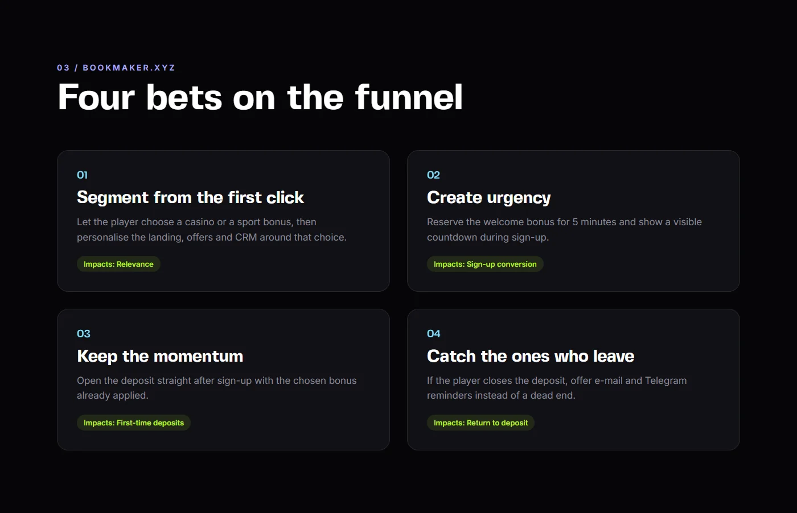
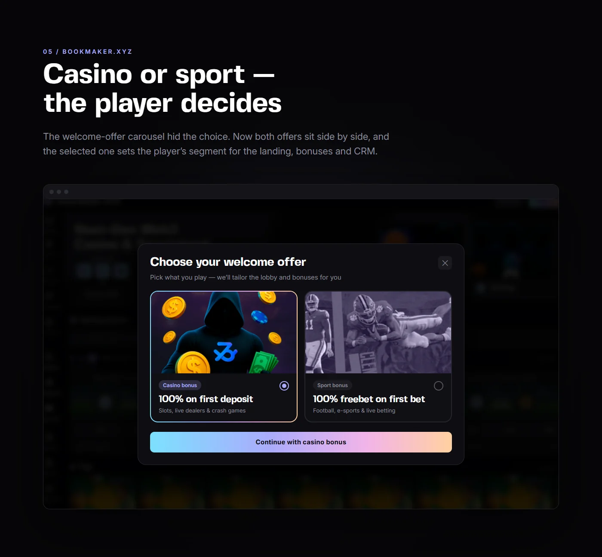
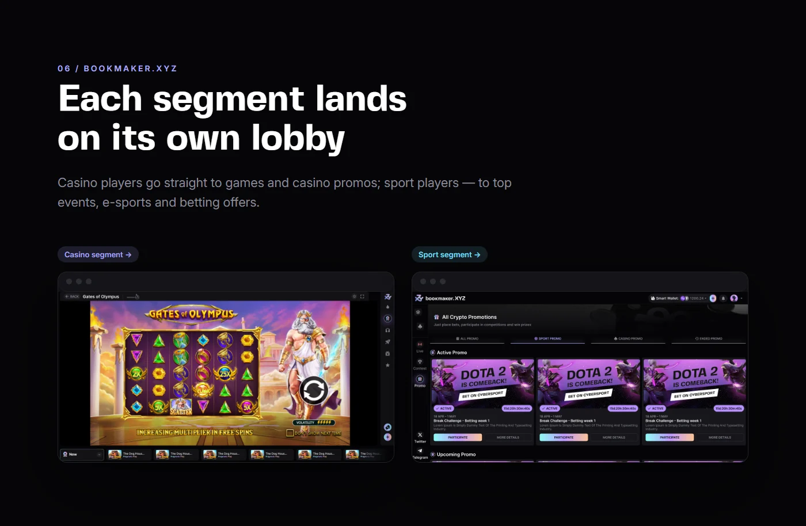
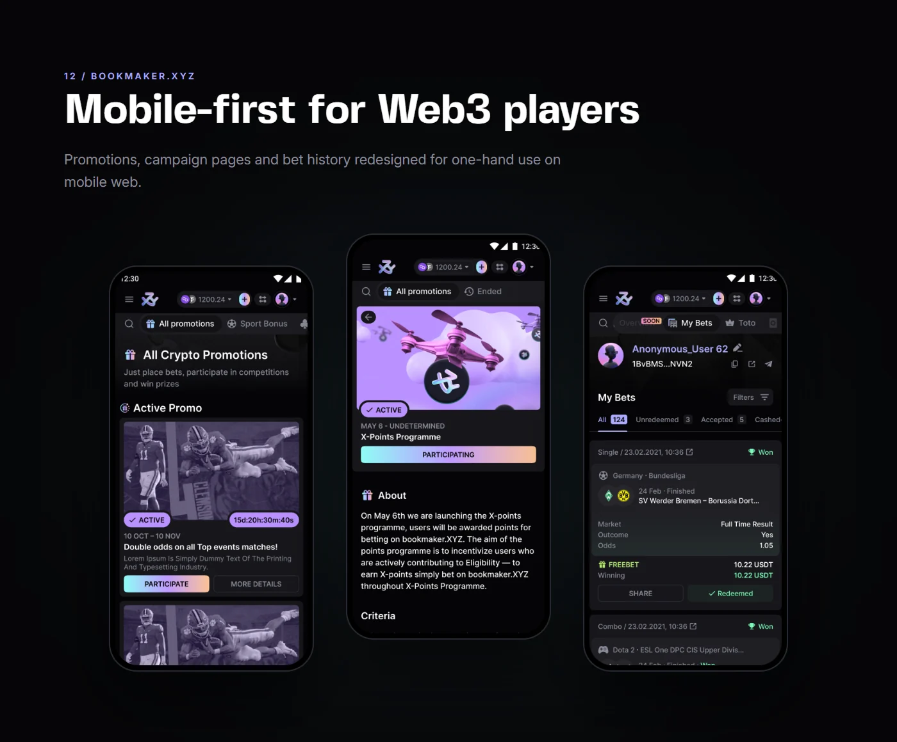

bookmaker.XYZ
Web3 casino & sportsbook. Onboarding funnel redesign
bookmaker.XYZ is a Web3 casino and sportsbook: players connect a wallet or a social account, fund in USDT and bet on sports, e-sports and casino games. I redesigned the first-session journey — from the first visit to the first deposit.
+700%
Conversion to sign-up
+400%
First-time deposits (FTD)
4
Funnel changes shipped
Task
New players dropped off between the first visit and the first deposit: one generic onboarding for casino and sport fans, no urgency and no way back for those who left.
Solution
Segment players from the first click — casino or sport — and land each on their own lobby. Open the deposit right after sign-up with the chosen bonus pre-applied. A soft opt-in keeps the bonus for players who leave without depositing.
Result
+700% conversion to sign-up and +400% first-time deposits. Four funnel changes shipped to production.








(Next case)
Caswino
Crypto casino platform. UX/UI design →